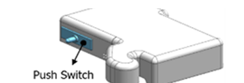
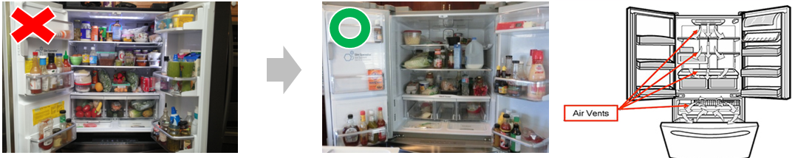
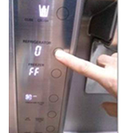
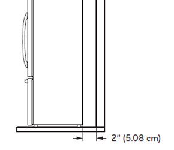
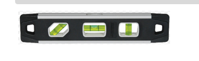

«بعتذرلك عن الإزعاج. قبل ما نلجأ لأي إجراء تاني، أحب أراجع معاك كام خطوة بسيطة ممكن تساعدنا نحدد سبب المشكلة ونحلها في الحال. لو تسمحلي أتابع معاك ده هيوفر عليك الوقت وأي تكاليف أو زيارة غير ضرورية.»
٧ فحوصات بالترتيب قبل تسجيل أي بلاغ
قائمة فحص التبريد المنعدم
١مفتاح الباب (Door switch)
٢انسداد فتحات الهواء
٣وضع العرض Demo Mode
٤تركيب خلال ٢٤ ساعة
٥ظروف التركيب — المسافة من الجدار
٦الأبواب فاضلة مفتوحة
٧استواء الجهاز
الخطوة ١ — فحص مفتاح الباب (Door switch)
هل مفتاح الباب مضغوط بشريط لاصق أو مغناطيس؟
اقرأ للعميل
«ممكن نبص على مفتاح الباب — فيه شريط لاصق أو مغناطيس حاطط عليه وضاغطه؟ لو أيوه لازم نشيله علشان المفتاح يرجع لوضعه الطبيعي، لأنه لو فضل مضغوط الجهاز يفتكر إن الباب مقفول والإضاءة والمراوح بتشتغل غلط.»
١
فحص هل مفتاح الباب مضغوط بشريط لاصق أو مغناطيس.
٢
لو الإجابة نعم — يتم إزالة الشريط أو المغناطيس لتحرير المفتاح.

مكان مفتاح الضغط (Push Switch)
الخطوة ٢ — فحص انسداد فتحات الهواء
ممنوع وضع كمية أكل كبيرة حول فتحات الهواء
اقرأ للعميل
«ممكن نتأكد إن مفيش أكل كتير أو علب موضوعة قصاد فتحات الهواء جوه الثلاجة — لأن ده بيسدّ الهوا ويمنع دوران الهواء البارد. لو تسمحلي نعيد ترتيب الأكل بعيد عن الفتحات.»
١
التأكد إن العميل مش حاطط كمية أكل كبيرة حول فتحات الهواء.
٢
الأكل الكتير أو الموضوع قصاد الفتحات بيسدّ الهوا ويعطّل دوران الهواء البارد — يتم إعادة ترتيب الأكل.

يسار: ترتيب خطأ يسد الفتحات — يمين: الترتيب الصحيح ومكان فتحات الهواء (Air Vents)
الخطوة ٣ — فحص تفعيل وضع العرض (Demo Mode)
لو الشاشة بتقرأ 0 للثلاجة و FF للفريزر يبقى وضع العرض مفعّل
اقرأ للعميل
«ممكن حضرتك تقرالي الأرقام اللي ظاهرة على الشاشة؟ لو الثلاجة بتقرأ صفر والفريزر FF يبقى الجهاز في وضع العرض وده بيوقف التبريد. هنلغيه بالضغط المستمر على زر Refrigerator و Ice Plus مع بعض لمدة ٥ ثوانٍ.»
١
لو الشاشة بتعرض 0 لدرجة حرارة الثلاجة و FF لدرجة حرارة الفريزر — يبقى وضع العرض (Demo Mode) مفعّل.
٢
لإلغاء وضع العرض: الضغط مع الاستمرار على زر Refrigerator وزر Ice Plus في نفس الوقت لمدة ٥ ثوانٍ.
ملحوظة: طريقة الإلغاء تختلف حسب الموديل — يُرجى مراجعة دليل المستخدم الخاص بموديل العميل.

شكل الشاشة في وضع العرض — 0 للثلاجة و FF للفريزر
الخطوة ٤ — هل تم التركيب خلال آخر ٢٤ ساعة؟
الجهاز محتاج ٢٤ ساعة على الأقل لاستقرار الحرارة الداخلية
اقرأ للعميل
«الثلاجة اتركبت لأول مرة أو اتنقلت وأعيد تركيبها في آخر ٢٤ ساعة؟ لو أيوه، الجهاز محتاج ٢٤ ساعة على الأقل لحد ما درجة الحرارة الداخلية تستقر.»
١
فحص هل الجهاز تم تركيبه لأول مرة أو أعيد تركيبه بعد نقله.
٢
لازم يتم ترك الجهاز ٢٤ ساعة على الأقل لتستقر درجة الحرارة الداخلية قبل الحكم على التبريد.
الخطوة ٥ — ظروف التركيب
المسافة بين ظهر الثلاجة والجدار
اقرأ للعميل
«ممكن نشوف المسافة بين ظهر الثلاجة والجدار؟ لازم تكون على الأقل ١٠ سم علشان الهوا يتحرك ويطلع الحرارة من ورا الجهاز.»
١
السؤال للعميل: هل المسافة بين الثلاجة والجدار ضيقة؟
٢
لو ضيقة — يتم ترك مسافة ١٠ سم على الأقل بين ظهر الثلاجة والجدار.

المسافة المطلوبة من الظهر — ٢ بوصة (٥.٠٨ سم)
الخطوة ٦ — الأبواب فاضلة مفتوحة
لازم تكون أبواب الثلاجة مقفولة تمامًا
اقرأ للعميل
«ممكن نتأكد إن الأبواب بتقفل تمامًا؟ ولازم نتأكد إن مفيش أكل مانع الباب من الغلق.»
١
التأكد إن أبواب الثلاجة بتقفل تمامًا.
٢
التأكد إن مفيش أكل أو علب مانعة الباب من الغلق.
الخطوة ٧ — استواء الجهاز والأبواب
ميل بسيط للخلف هو الوضع الصحيح
اقرأ للعميل
«لو عند حضرتك ميزان استواء صغير، ممكن نتأكد إن الجهاز مستوي — والمفروض يكون فيه ميل خفيف جدًا لناحية الظهر. ده بيتم بضبط أرجل الثلاجة.»
١
السؤال للعميل: هل يمكن استخدام ميزان استواء للتأكد إن الجهاز مستوي؟ (مع ميل بسيط ناحية الظهر)
٢
الوضع الموصى به هو ضبط أرجل الثلاجة بحيث يكون هناك ميل خفيف لأسفل ناحية الظهر.

ميزان استواء صغير (Torpedo level)
إفادة العميل بالانتظار — إنهاء المكالمة
يتم التأكد من فهم العميل إن الجهاز محتاج ٢٤ ساعة على الأقل بعد التركيب أو النقل لتستقر درجة الحرارة، وإنه لو المشكلة استمرت بعد المدة دي يتواصل معانا لتسجيل زيارة فني.
«هسجّل لحضرتك طلب صيانة وزيارة فني. الصيانة داخل فترة الضمان مجانية تمامًا. ولو ظهر إن السبب مش عطل فني في الجهاز، أو إن العطل خارج نطاق الضمان، بتكون في تكلفة زيارة ومعاينة ١٨٢ جنيه لأول زيارة، وأي زيارة بعدها ٣٠٠ جنيه — وتكلفة الصيانة نفسها بتتحدد بعد ما الفني يعاين الجهاز، وهتُعرض على حضرتك للموافقة قبل أي إصلاح.»
للموظف: اضغط على رابط جدول الرسوم بالأسفل، وابلغ العميل بقيمة رسوم الزيارة والصيانة الخاصة بمنتجه (صباحي/مسائي) قبل تسجيل البلاغ.
يتم توضيح كل الفحوصات اللي تمت مع العميل ورقم الموديل في البلاغ. (لو رقم الموديل مش متوفر يتم تسجيل البلاغ بعد التأكد إن الجهاز إل جي ومشترى من داخل مصر)